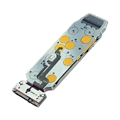
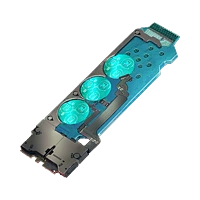
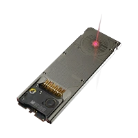
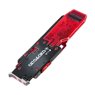
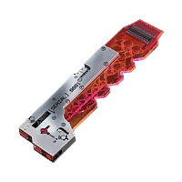

75
The Paraline has 5-9 RAM units, 4-8 Quickhack slots, and a buffer size of 0-4.

The Biotech Σ Mk.1-4 is a Cyberdeck Operating System manufactured by Biotech Σ
The Biotech Σ has 6-9 RAM units, 5-8 Quickhack slots, and a buffer size of 1-4.

77
The Canto has 10 RAM units, 4 quickhack slots, and a buffer size of 12. It costs 33 Cyberware Capacity to be installed.

77
The Arasaka Shadow has 5-9 RAM units, 4-8 Quickhack slots, and a buffer size of 0-4.

77
The Netdriver has 13 RAM units, 8 Quickhack slots, and a buffer size of 4.